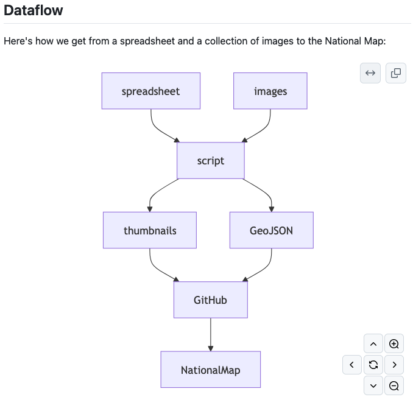

- Wed 25 September 2024
- git
- Mike Lynch
- #git, #github, #markdown, #visualisation
Mermaid is a JavaScript library for generating diagrams from a simple text format. GitHub autogenerates Mermaid diagrams for you if you include them in Markdown using triple-backticks:
## Dataflow
Here's how we get from a spreadsheet and a collection of images to the
National Map:
```mermaid
graph TD;
spreadsheet-->script;
images-->script;
script-->GeoJSON;
script-->thumbnails;
thumbnails-->GitHub;
GeoJSON-->GitHub;
GitHub-->NationalMap;
```

For learning how Mermaid works and debugging your diagrams, there's a live editor.
There are a lot of these text-to-diagram tools around now: here's a website which lets you compare their output interactively.